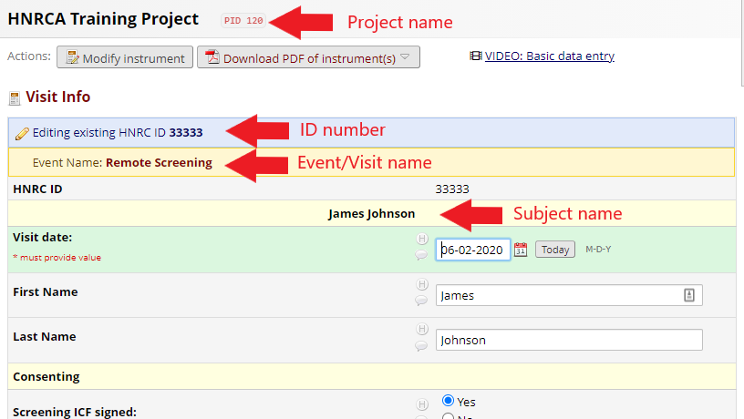
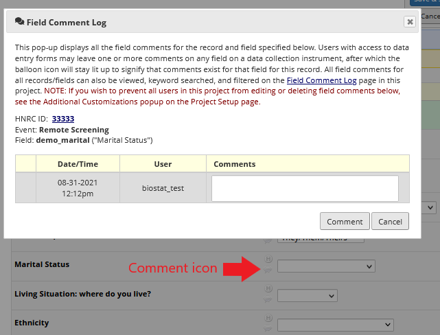

4 Entering Data
4.1 Ensuring the form is correct
The most important thing to do before ever entering data into a form is to check and make sure that the form you have open is for the correct HNRC ID, the correct event/visit, and the correct project. This information can all be found at the top of the page. The name of the project is displayed at the top of the page, while the HNRC ID and event/visit name are displayed at the top of the form. Often, participant names are displayed at the top of the form as well to help reduce confusion.
Beyond being on the correct form, you’ll of course always want to take care to ensure that you’ve selected the corrected field for any given data point. Generally speaking, fields are horizontally aligned with their labels and there are thin, gray lines separating each field.

4.2 Saving data
Once you’ve entered data into a form, you’ll want to make sure you save that form. There are several save options presented at the bottom of each form as well as floating save options at the top right of the page. Save & Exit Form will save the data and return you to the record’s Home Page. Save & Stay will save the data and keep you on the current page. Save & Go To Next Form will save and advance you to the next form on the list in the left-hand side bar. In other words, you’ll be taken to the next form for that record at that event (visit). Cancel will remove any changes and return you to record’s Home Page.

4.3 Changing data
If for any reason data in Redcap needs to be changed, one should be sure to leave a comment in Redcap explaining the reason for the change. Next to every data field in Redcap, there are a couple of icons. The comment icon is the one which resembles a speech bubble. If you click it, a pop-up will appear that will allow you to enter comments pertaining to that field. Note that these comment fields should be reserved for changes to data. Forms will typically have comment fields to capture general comments pertaining to the study. Additionally, next to the comment icon there is also an ‘H’ icon, which will display the history of all the data that has previously been entered in that field.
